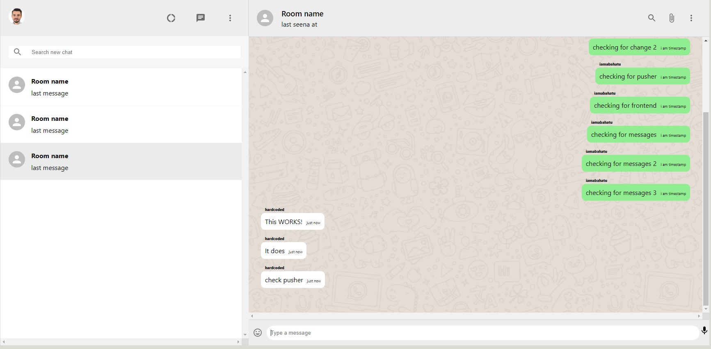
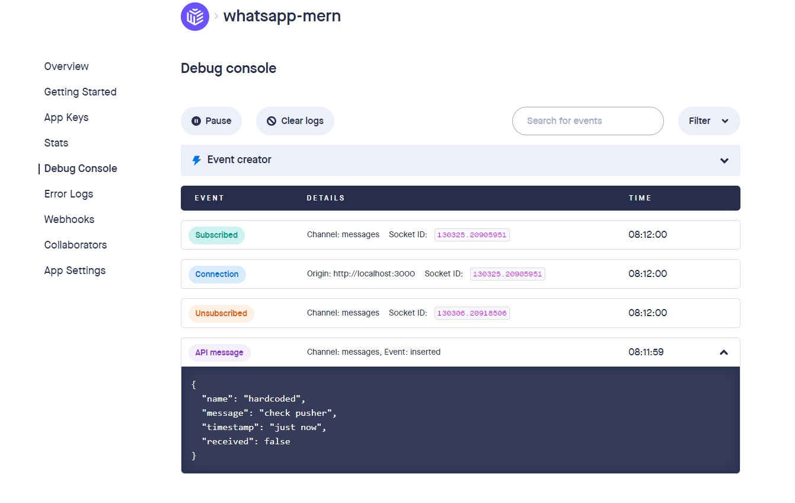

Simple chat
Created a simple chat using MERN technology stack.
Pusher was used for adding real-time data and functionality to my web application.
The user can see messages sent in real time, without refreshing the page with the help of Pusher.
GitHub Repository
Technologies:
- - Javascript
- - React
- - NodeJS
- - Express
- - HTML/CSS
Homepage

Pusher
